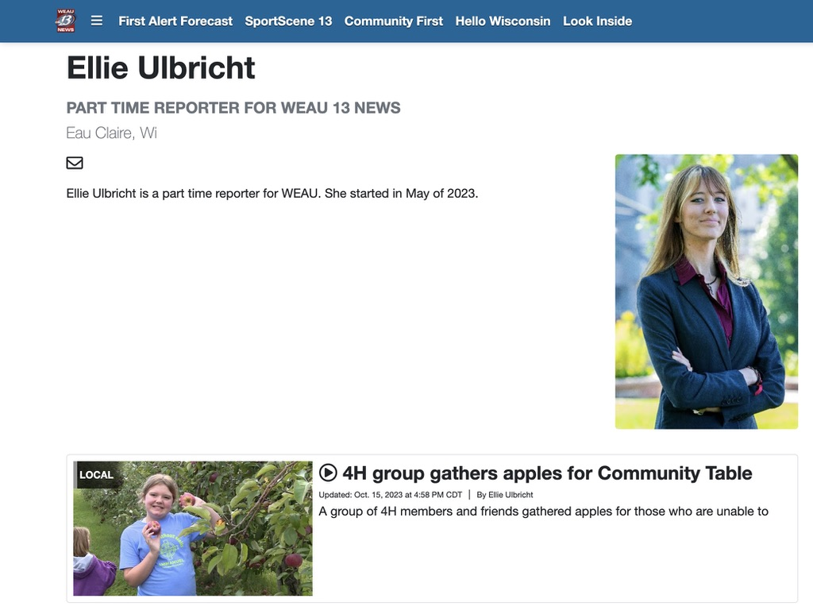

About
Elisabeth Ulbricht is a journalism student at the University of Wisconsin - Eau Claire. Ulbricht is passionate about her writing and how she uses it. She has a variety of goals that she plans on achieving in life, including receiving a broadcast Emmy and moving her career to be international. Ulbricht’s work experience is broad and sporadic, she has worked as a copywriter, copyeditor, wrote in Rochester, MN’s local newspaper, a reporter for UWEC’s TV-10, and is currently a part-time reporter for WEAU-13 News in Eau Claire, Wisconsin. Ulbricht graduated high school in 2021, while also receiving her Associates Degree from Rochester Community and Technical College, at the same time; she then transferred to UWEC where she is currently pursuing her bachelor’s in Journalism, with a minor in Multi-Media Communications. During her time at UWEC, Ulbricht has been on the Dean’s list twice, with various articles being recognized and published by UWEC. Not only is Ulbricht accomplished through school, she is also certified in an Influencer Marketing Program, as well as a Social Media Analytics Cycle Program.
Gallery
Contact
Ph-#: (507)-389-1060
Email: Ulbriche6147@uwec.edu